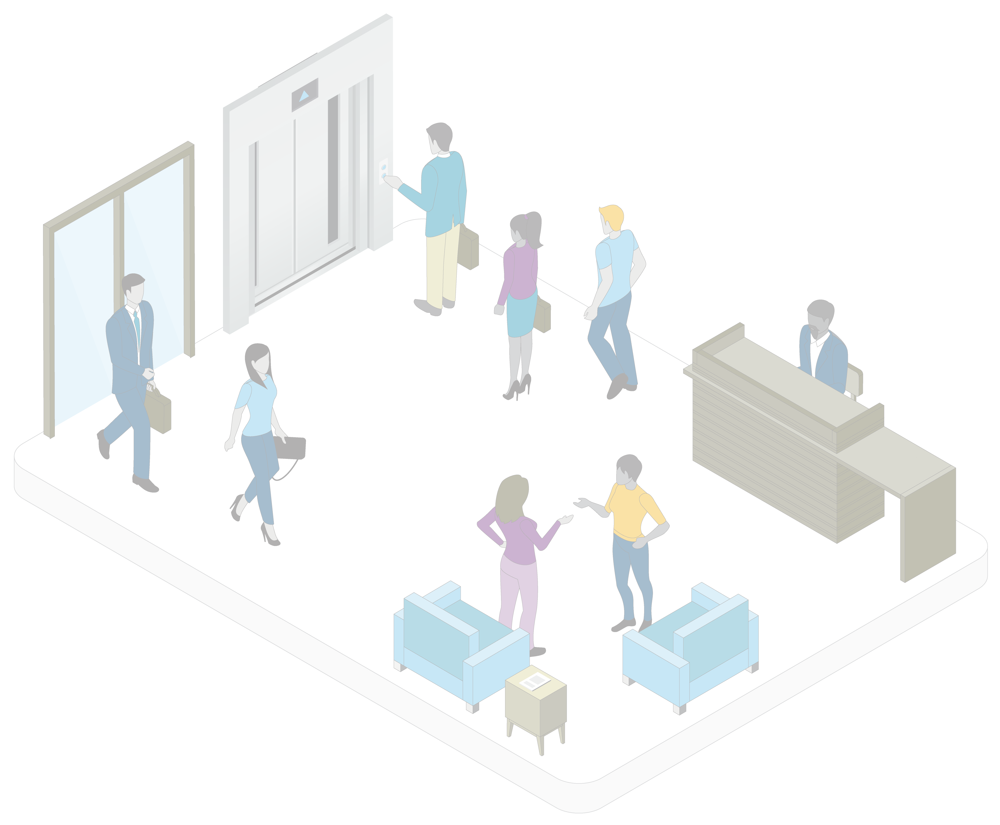
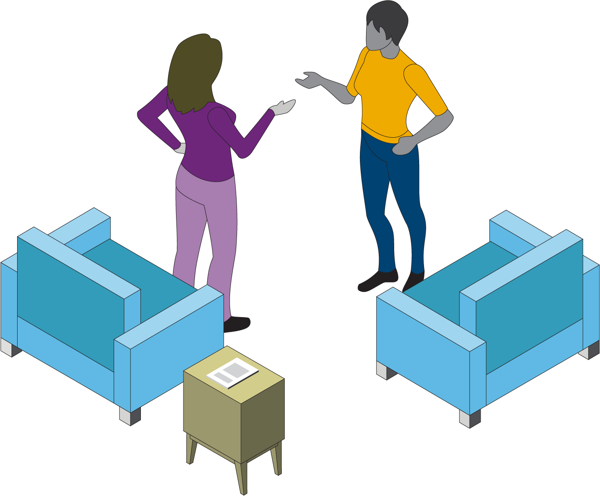
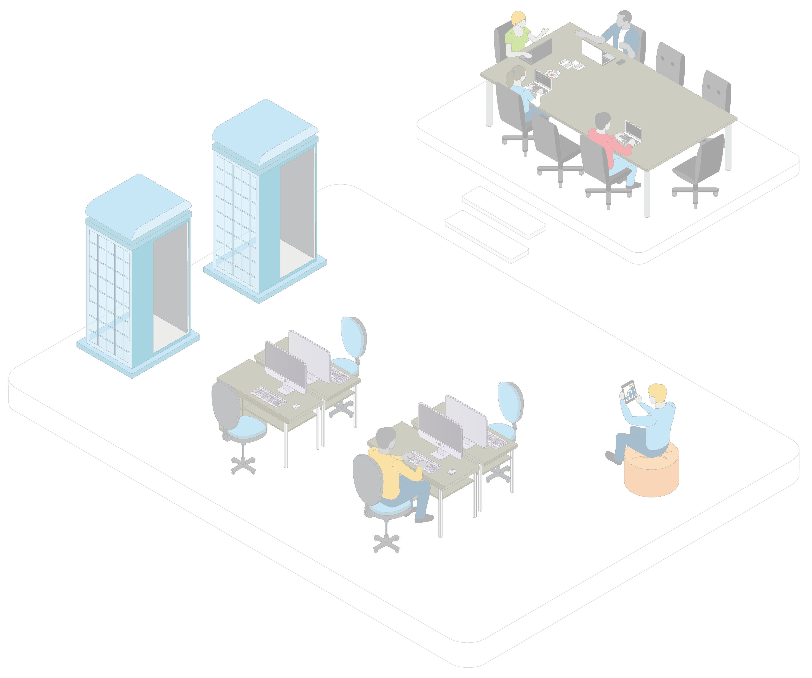
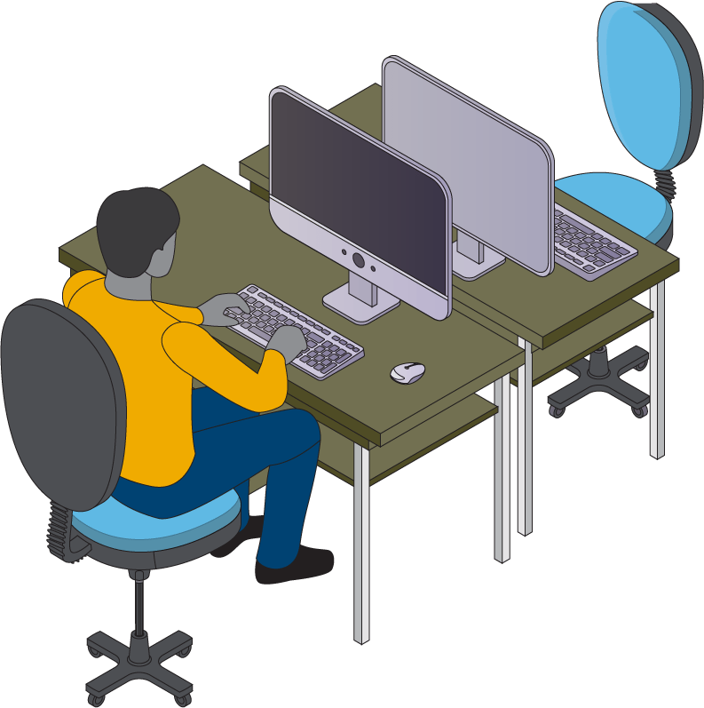
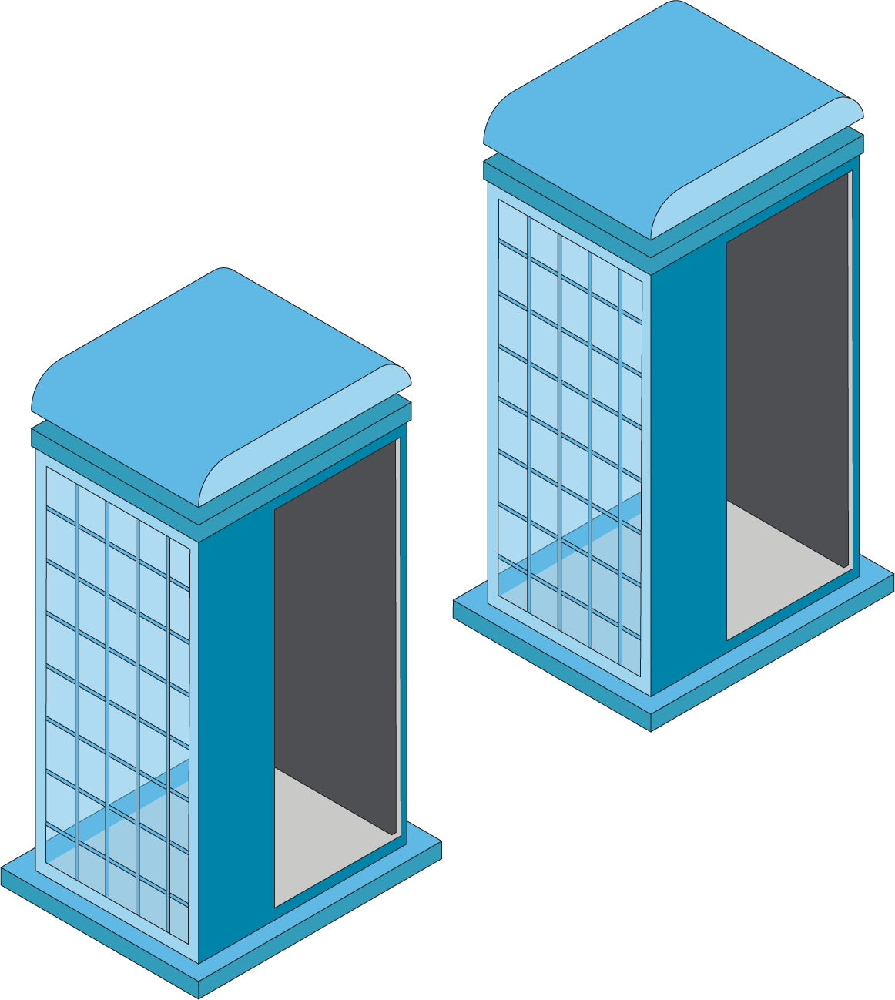
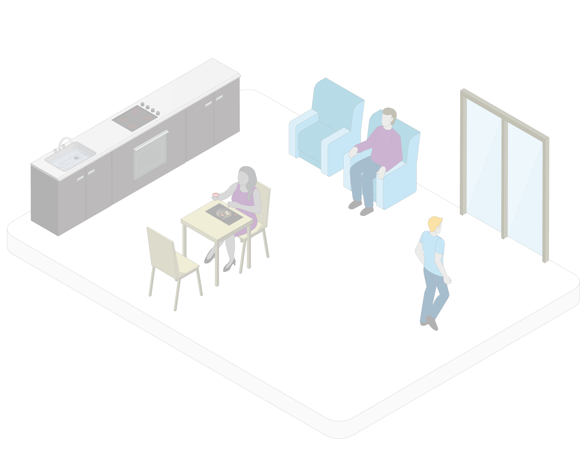

Cliquez sur les différentes zones ci-dessous pour en savoir plus

Le nouveau hall d’entrée




Les entreprises devront mettre à jour leurs politiques à l’intention des visiteurs, y compris les fournisseurs, les partenaires et les entrepreneurs, et leur fournir des lignes directrices sans équivoque pour contribuer à assurer la sécurité et la conformité. Une approche centralisée de la gestion des visiteurs peut aider les entreprises à gérer la circulation et à s’assurer que le bureau respecte les ratios et les exigences en matière de distanciation.
Les entreprises devront fournir des lignes directrices sur le port du masque, les poignées de main, la distanciation physique et d’autres facteurs. Bien que la réglementation locale constituera la base de plusieurs de ces pratiques, les entreprises pourraient opter pour des règles plus précises.
Des considérations liées à la protection des renseignements personnels pourraient empêcher les entreprises d’exiger que les travailleurs se fassent vacciner ou communiquent leur état de vaccination, mais la signalisation peut rappeler les avantages de la vaccination et les règles du bureau en général.
Pour les entreprises qui ont des bureaux dans de grandes tours, le nombre d’employés qui peuvent revenir au bureau pourrait être limité par la capacité des ascenseurs. De longues attentes pour les ascenseurs pourraient non seulement créer des risques en matière de distanciation physique, mais aussi frustrer les travailleurs et éliminer les gains de productivité que le retour au bureau était censé leur procurer. Les entreprises doivent collaborer avec leurs gestionnaires immobiliers pour connaître les limitations et adapter leurs plans en conséquence.
À leur arrivée, les travailleurs pourraient faire l’objet d’un contrôle de la température.
Trois jours au bureau, deux jours à la maison?





De plus, un système de réservation d’espace de bureau, accessible par téléphone, ordinateur portable et kiosque dans le bureau, pourrait aider à coordonner la circulation.
Grâce à un modèle hybride de gestion
de la main-d’œuvre, les entreprises pourraient devoir restructurer leurs locaux, car moins d’employés travailleront au bureau chaque jour. Certaines personnes pourraient toujours avoir besoin d’espaces de travail désignés.
Comme 61 % des employés disent prévoir passer la moitié de leur temps au bureau d’ici juillet 2021 , les employeurs devront notamment élaborer des structures organisationnelles, des environnements
de bureau, des calendriers et des politiques précis pour appuyer tous les modes
de travail.
1
Comme les gens ouvrent une session à la maison et au bureau et que les attaques par rançongiciel ont augmenté de 336 % du début de 2019 à la fin de l’année dernière ,
la mise à niveau de l’infrastructure, des protocoles et des plans d’intervention des TI en cas de cyberincident sera primordiale pour la gestion des risques de l’entreprise.
2
La demande pour des salles de réunion plus grandes pourrait augmenter, car les groupes se réuniront peut-être moins fréquemment (p. ex., mensuellement ou trimestriellement), mais en plus grand nombre. La demande pour des outils de collaboration comme des tableaux blancs électroniques pourrait également augmenter.
Avis important : Le présent document est offert à titre de ressource informationnelle aux clients et partenaires commerciaux d’Aon. Il vise à fournir des indications générales sur les expositions potentielles et n’a pas pour but d’offrir des conseils médicaux ou juridiques ou de traiter des questions médicales ou des situations de risque particulières. Compte tenu de la nature dynamique des maladies infectieuses, Aon décline toute responsabilité quant aux indications fournies. Nous encourageons vivement les lecteurs à se renseigner plus amplement sur la sécurité, la médecine et l’épidémiologie auprès de sources dignes de confiance, comme les Centers for Disease Control and Prevention et l’Organisation mondiale de la Santé. En ce qui a trait aux risques couverts, la question de savoir si une garantie s’applique ou si une police d’assurance répond à un risque ou à une situation donnée est subordonnée aux conditions des polices ou contrats d’assurance en cause et à l’appréciation des assureurs.
Bien que le plus grand soin ait été apporté à la production de ce document et que les renseignements qu’il contient aient été obtenus de sources jugées fiables, Aon n’en garantit pas l’exactitude, l’exhaustivité, la pertinence, ni la convenance pour toute fin que ce soit ni pour toute partie du document, et n’assume aucune responsabilité pour toute perte quelconque subie par une personne qui pourrait s’y fier. Tout destinataire de ce document est responsable de l’utilisation qu’il en fait. Les renseignements contenus dans ce document ont été compilés à partir des renseignements dont nous disposions à la date de sa publication.
Les descriptions, résumés et renseignements sur la couverture sont fournis à titre informatif seulement et ne modifient pas les modalités réelles d’une police d’assurance. La couverture est régie uniquement par les modalités de la police pertinente.
© Aon plc 2021. Tous les droits sont réservés.
1 Sondage sur le télétravail aux États-Unis (en anglais).
2 Rapport 2021 d’Aon sur les cyberrisques.
3 Conseils des CDC (en anglais).

Retour au sommet

Pause-café



Les employés seront plus susceptibles
de trouver des raisons de se rendre
dans un bureau qui est lumineux, confortable et attrayant sur le plan visuel. Les entreprises devraient collaborer avec les concepteurs organisationnels afin de trouver la configuration qui convient le mieux à leur culture.
Il est recommandé d’utiliser des poubelles sans contact et des distributeurs de savon automatiques pour réduire le risque de contact avec les microbes. Certaines entreprises pourraient également envisager d’installer des filtres HEPA pour améliorer le nettoyage de l’air .
3
La pandémie a mis en lumière le plein épanouissement des employés dans
leur vie personnelle, qui implique souvent
la prise en charge d’enfants ou de parents âgés, un déménagement à l’autre bout
du pays ou de la ville, la lutte contre une maladie ou l’adoption d’un nouvel animal
de compagnie. Pour nombre d’entre
eux, leur vie serait beaucoup plus satisfaisante et productive, tant au travail qu’à la maison, avec plus de souplesse. Les entreprises qui reconnaissent cette réalité, avec des structures, des programmes et
des processus de soutien organisationnels, acquerront une réputation d’employeurs attrayants et renforceront leur capacité d’attirer et de fidéliser les meilleurs talents.
Certains travailleurs pourraient se voir attribuer, de façon flexible, un espace approprié à chaque visite ou recourir
à des aires de repos agrandies pour les interactions informelles et le travail ponctuel. Dans ces zones, des bornes
de recharge rapide peuvent permettre
aux travailleurs de ne pas épuiser
leurs batteries.